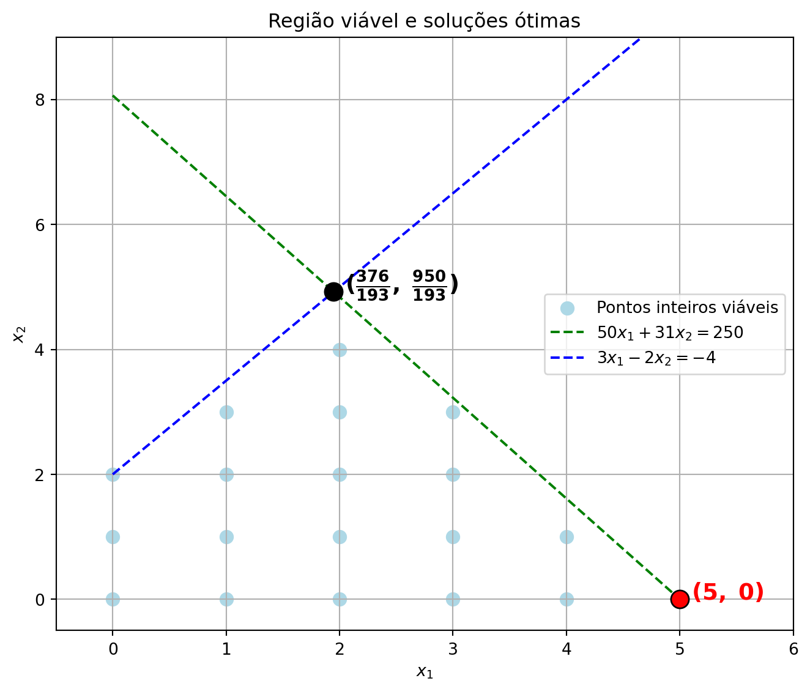
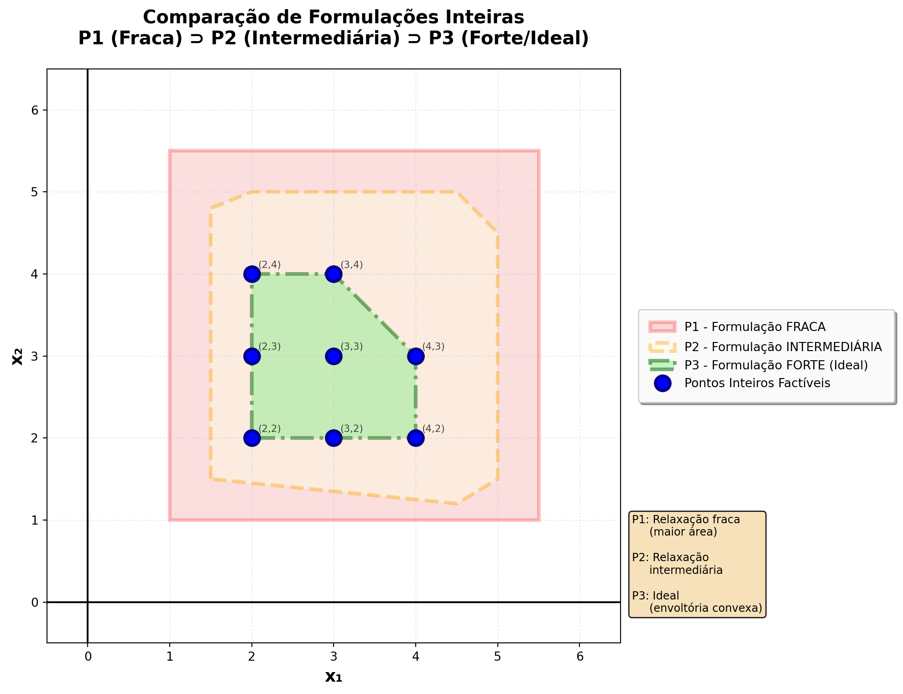

3 Métodos de Otimização Discretos
“… Te falo mil razões que me invadem
Preciso de você o mundo inteiro”
— Roberta Campos (“Mundo Inteiro”, do álbum “Varrendo a lua”, 2009)
Na primeira parte do curso, estudamos métodos de otimização contínuos, onde as variáveis de decisão podem assumir qualquer valor real. No entanto, muitos problemas do mundo real exigem que as variáveis sejam discretas, ou seja, assumam valores inteiros ou binários. Esses problemas são conhecidos como problemas de otimização discreta e incluem uma ampla gama de aplicações, desde a alocação de recursos até o planejamento de rotas.
Uma pergunta natural que surge é: por que precisamos de métodos específicos para otimização discreta? E se utilizássemos o arredondamento de soluções ótimas fracionárias obtidas, por exemplo, pelo Método Simplex? Apesar da hipótese não ser de toda a forma errada, o arredondamento pode levar a soluções inviáveis ou subótimas. Vejamos um exemplo abaixo, extraído da obra de (Wolsey 1998).
\[ \max f(x_1,x_2) = x_1 + 0,64x_2 \]
Sujeito a:
\[
\begin{cases}
50x_1 + 31x_2 \leq 250 \\
3x_1 - 2x_2 \geq -4 \\
x_1, x_2 \in \mathbb{Z}_+
\end{cases}
\]
O gráfico da região viável é apresentado a seguir:
Note que o ponto ótimo fracionário (obtido pelo método simplex) é \((\frac{376}{193}, \frac{950}{193}) \approx (1,95; 4,92)\), com valor da função objetivo \(f \approx 4,14\). Se arredondarmos esse ponto para o inteiro mais próximo, obteremos a solução \((2, 5)\), que é inviável. A solução ótima inteira é \((5, 0)\), com valor da função objetivo \(f = 5\). Isso ilustra que nem sempre um arredondamento simples resolverá o problema, evidenciando a importância de métodos específicos para otimização discreta.
Nosso objetivo é encontrar a envoltória convexa dos pontos inteiros viáveis e, em seguida, determinar o ponto que maximiza (ou minimiza) a função objetivo dentro dessa envoltória. No entanto, essa tarefa pode ser computacionalmente desafiadora, especialmente para problemas de grande escala. Formalmente, define-se o conceito de envoltória convexa inteira da seguinte forma.
NoteDefinição 1 (Poliedro)
Um poliedro é um subconjunto do \(\mathbb{R}^n\) descrito por um conjunto finito de restriçẽs lineares. Formalmente, nota-se por \(P = \{x \in \mathbb{R}^n|Ax\le b\}\).
NoteDefinição 2 (Formulação)
Um polígono \(P \subseteq \mathbb{R}^{n+p}\) é uma formulação para um conjunto \(\mathcal{X} \subseteq \mathbb{Z}^n \times \mathbb{R}^p\) se, e somente se, \(\mathcal{X} = P \cap (\mathbb{Z}^n \times \mathbb{R}^p)\).
NoteDefinição 3 (Envoltória Convexa)
Dado um conjunto \(\mathcal{X} \subseteq \mathbb{R}^n\), a envoltória convexa de um conjunto \(\mathcal{X}\), denotada por\(\text{Conv}(\mathcal{X})\), é definida por:
\[ \text{Conv}(\mathcal{X}) = \left\{x=\sum_{i=1}^{k} \lambda_i x^i \mid k \geq 1, x^i \in \mathcal{X}, \lambda_i \geq 0, \sum_{i=1}^{k} \lambda_i = 1, i=1,\ldots,k\right\}. \]
A figura abaixo apresenta um exemplo de comparação de formulações, em que a formulação P1 é a mais fraca (maior área), P2 é intermediária e P3 é a mais forte (envoltória convexa dos pontos inteiros viáveis).

E quando não temos os gráficos das formulações, para que visualmente comparemos as forças das formulações? Como saber qual é a melhor? Considere um problema com quatro variáveis de decisão binárias \(x_1, x_2, x_3, x_4 \in \{0,1\}\). A formulação \(P_1\) é dada por:
\[ x_2 + x_3 + x_4 \le 3x_1 \]
Já a formulação \(P_2\) é dada por:
\[ \begin{alignat*}{1} x_2 \le x_1 \\ x_3 \le x_1 \\ x_4 \le x_1 \end{alignat*} \]
Em ambos os casos, o conjunto de soluções inteiras viáveis é o mesmo, ou seja, \(\mathcal{X} = \{(0,0,0,0), (1,0,0,0), (1,1,0,0), (1,1,1,0), (1,1,1,1)\}\). O conjunto de restrições ativa a variável \(x_1\) em 1 se qualquer uma das variáveis \(x_2, x_3\) ou \(x_4\) for 1. No entanto, a formulação \(P_2\) é mais forte do que \(P_1\), pois sua envoltória convexa é menor e mais próxima dos pontos inteiros viáveis. Isso pode ser verificado da seguinte forma: uma solução viável para o problema relaxado (onde as variáveis podem assumir valores fracionários) é dada por:
- \((x_1, x_2, x_3, x_4) = (\frac{1}{3}, 1, 1, 1)\) é viável para \(P_1\) (pois \(1 + 1 + 1 \le 3\times\frac{1}{3}\)), mas não é viável para \(P_2\), pois \(1\) não é menor ou igual a \(\frac{1}{3}\).
Diante disso, pode-se dizer que \(P_2\) é uma formulação que domina \(P_1\). Formalmente, define-se o conceito de formulação dominante da seguinte forma.
NoteDefinição 4 (Formulação Dominante)
Dado um conjunto \(\mathcal{X} \subseteq \mathbb{Z}^n\), sejam \(P_1\) e \(P_2\) duas formulações para \(\mathcal{X}\). Diz-se que \(P_2\) domina \(P_1\) se, e somente se, \(P_2 \subset P_1\).
3.1 Modelos de Programação Inteira
Wolsey (1998) define os problemas de programação inteira estudados neste curso como segue:
Problema de Programação Linear Inteiro Misto
\[ \begin{align} \max \quad & cx + dy \\ \text{s.a.} \quad & Ax + Gy \leq b \\ & x \geq 0, y \geq 0 \text{ e inteiro} \end{align} \]
Problema de Programação Linear Inteiro
\[ \begin{align} \max \quad & cx \\ \text{s.a.} \quad & Ax \leq b \\ & x \geq 0 \text{ e inteiro} \end{align} \]
Problema de Programação Binária
\[ \begin{align} \max \quad & cx \\ \text{s.a.} \quad & Ax \leq b \\ & x \in \{0,1\}^n \end{align} \]
Considere o exemplo do problema de mix de produção de mesas e cadeiras feitas com peças de Lego, apresentado em (Cochran 2015). A maneira correta de considerar sua formulação é como um problema de programação inteira, uma vez que não faz sentido produzir uma fração de uma mesa ou cadeira. O modelo matemático mais propriado para descrever o problema é dado por:
- \(x_1\) = número de mesas a produzir
- \(x_2\) = número de cadeiras a produzir
Função Objetivo
\[ \max Z = 16x_1 + 10x_2 \]
Maximizar o lucro total, onde cada mesa gera lucro de 16 unidades monetárias e cada cadeira gera lucro de 10 unidades monetárias.
Restrições
\[ \begin{align} 2x_1 + 2x_2 &\leq 8 \quad \text{(peças pequenas)} \\ 2x_1 + x_2 &\leq 6 \quad \text{(peças grandes)} \\ \end{align} \]
Restrições de recursos, em que a primeira limita o uso de peças pequenas a 8 unidades e a segunda limita o uso de peças grandes a 6 unidades.
Não-negatividade
\[ x_1, x_2 \in \mathbb{Z}^+. \]
As próximas seções exploram diferentes formas de modelar problemas de otimização discreta, além da apresentação de alguns problemas clássicos de otimização com variáveis inteiras ou binárias.
3.2 Modelagem com variáveis discretas
A modelagem de problemas de otimização com variáveis discretas envolve a definição de variáveis que podem assumir apenas valores inteiros ou binários. Isso é particularmente útil em situações onde as decisões a serem tomadas são discretas por natureza, como a seleção de itens, alocação de recursos ou programação de tarefas. A seguir, são apresentados alguns exemplos de modelagem com variáveis discretas. Os exemplos discutidos são baseados em (Arenales et al. 2007), (Coelho 2013) e (Asghari et al. 2022).
3.2.1 Implicações “se-então”
- Considere a seguinte situação: a produção do item “A” implica em um custo fixo de preparação da máquina. Podemos analisar esta situação a partir da Figura abaixo e da função \(K(x)\), apresentada a seguir:
\[ K(x) = \begin{cases} s + cx, & x>0 \\ 0, & x = 0 \end{cases} \]
em que \(x \in \mathbb{Z}\) indica a quantidade do item “A” produzida, \(s\) é o custo de preparação da máquina e \(c\) é o custo de produzir uma unidade de “A”. Como podemos modelar \(K(x)\) de maneira linear?
Considere a seguinte situação: se o item “A” for fabricado, o item “B” também será fabricado, a uma quantidade de pelo menos \(m\) unidades. Como modelamos estas restrições linearmente?
Suponha que 4 itens podem ser produzidos em uma máquina denotada por \(k\), e se o item 1 é produzido em \(k\), então os outros itens 2, 3 e 4 não podem ser processados em \(k\) e devem ser processados em outras máquinas. Como modelar essas condições?
3.2.2 Ativação/desativação de restrições
Considere uma restrição \(x_1 + x_2 - 10 \le 0\). Desejamos que essa restrição seja ativada (considerada) se \(y=0\) e desativada (ignorada) se \(y=1\), em que \(y \in \{0,1\}\). Como modelar essa situação linearmente?
3.2.3 Restrições disjuntivas
Considere as seguintes restrições: \((i) 4x_1 + 2x_2 \le 80\) e \((ii) 2x_1 + 5x_2 \le 100\), \(x_1, x_2 \ge 0\). Quando \(4x_1 + 2x_2 - 80 \le 0\) (restrição ativada), desejamos que a reta de \((ii)\) seja transladada para \(2x_1 + 5x_2 \le 200\). Por outro lado, se \(2x_1 + 5x_2 - 100 \le 0\), desejamos que a reta em \((i)\) seja transladada para \(4x_1 + 2x_2 \le 200\). Como modelar essa situação linearmente?
3.2.4 Representação de função linear por partes
Considere uma função de custo de produção \(C(x)\) que varia de acordo com a quantidade produzida:
\[ C(x) = \begin{cases} 5x & \text{se } 0 \leq x \leq 100 \\ 500 + 3x & \text{se } 100 < x \leq 200 \\ 800 + 2x & \text{se } 200 < x \leq 300 \\ 1400 + x & \text{se } x > 300 \end{cases} \]
Interpretação: O custo unitário diminui conforme a produção aumenta (economias de escala).
Linearização
Variáveis de Decisão:
- \(x\): quantidade total produzida
- \(x_1\): quantidade produzida na faixa \([0, 100]\)
- \(x_2\): quantidade produzida na faixa \((100, 200]\)
- \(x_3\): quantidade produzida na faixa \((200, 300]\)
- \(x_4\): quantidade produzida na faixa \((300, \infty)\)
- \(y_1, y_2, y_3, y_4 \in \{0,1\}\): variáveis binárias indicando se cada faixa é utilizada
Modelo Linearizado
\[ \begin{align} \min \quad & C = 5x_1 + 3x_2 + 2x_3 + x_4 + 500y_2 + 800y_3 + 1400y_4 \\ \text{s.a.} \quad & x = x_1 + x_2 + x_3 + x_4 \\ & x_1 \leq 100y_1 \\ & x_2 \leq 100y_2 \\ & x_3 \leq 100y_3 \\ & x_4 \leq My_4 \quad \text{(M suficientemente grande)} \\ & y_1 \geq y_2 \geq y_3 \geq y_4 \quad \text{(ordem de ativação)} \\ & y_1 \leq 1 \\ & x_1, x_2, x_3, x_4 \geq 0 \\ & y_1, y_2, y_3, y_4 \in \{0,1\} \end{align} \]
Restrições Explicadas
- Decomposição da produção: \(x = x_1 + x_2 + x_3 + x_4\)
- Limites por faixa: Cada \(x_i\) só pode ser positivo se \(y_i = 1\)
- Ordem sequencial: As faixas devem ser preenchidas em ordem (\(y_1 \geq y_2 \geq y_3 \geq y_4\))
- Custos fixos: Os termos \(500y_2\), \(800y_3\) e \(1400y_4\) representam os custos fixos acumulados
3.2.5 Relações lógicas
Uma empresa dispõe de cinco possibilidades de investimento. Modele os seguintes casos:
- No máximo três investimentos devem ser selecionados.
- O investimento 1 ou 2 é selecionado.
- Se o investimento 2 é selecionado, então o investimento 1 será selecionado.
- Se os investimentos 2, 3 ou 4 são selecionados, então o investimento 1 é selecionado.
3.2.6 Representação de valores discretos
Suponha que a variável \(x \in \{4,6,8,12,20,24\}\). Como definir \(x\) em um problema inteiro?
3.2.7 Linearizações mais complexas
Exemplos de linearizações que contemplam produtos entre variáveis binárias e contínuas, produtos entre variáveis binárias, produtos entre variáveis inteiras, função modular, entre outros, podem ser vistos em (Coelho 2013) e (Asghari et al. 2022).
3.3 Problemas clássicos de otimização discreta
O ex-jogador de futebol Jardel já dizia: “Clássico é clássico e vice-versa”. A frase, mesmo que encarada de forma “extrovertida”, mostra a relevância de voltar o foco para os clássicos, que emergem eventos esportivos singulares, parte da tradição ludopédica regional. Em Pesquisa Operacional, as formulações dos problemas clássicos são de extrema importância, pois servem como base para o desenvolvimento de novos modelos e algoritmos. A seguir, são apresentados alguns dos problemas clássicos de otimização discreta, juntamente com suas formulações matemáticas. Os exemplos discutidos são baseados em (hillier2013introducao?), (Arenales et al. 2007) e (taha2008operations?).
3.3.1 Pokemon Go Problem
O problema do Pokemon Go é um exemplo clássico de otimização discreta, onde o objetivo é capturar um conjunto de Pokemons em um mapa, minimizando a distância percorrida pelo jogador. Como formular esse problema?
Figura: Exemplo do problema do Pokemon Go, onde o objetivo é otimizar a captura de Pokemons em um mapa, minimizando a distância percorrida pelo jogador.
3.3.2 Problema da Mochila (Knapsack Problem)
O problema da mochila é um problema clássico de otimização discreta, onde o objetivo é maximizar o valor total dos itens colocados em uma mochila, sem exceder sua capacidade. Considere uma mochila com capacidade \(W\) e um conjunto de \(n\) itens, cada um com peso \(w_i\) e valor \(v_i\). Como formular esse problema?
Figura: Exemplo do problema da mochila, onde o objetivo é maximizar o valor total dos itens colocados em uma mochila, sem exceder sua capacidade.
Arenales, M., V. Armentano, R. Morabito, and H. Yanasse. 2007. Pesquisa Operacional. Elsevier.
Asghari, Mohammad, Amir M. Fathollahi-Fard, S. M. J. Mirzapour Al-e-hashem, and Maxim A. Dulebenets. 2022. “Transformation and Linearization Techniques in Optimization: A State-of-the-Art Survey.” Mathematics 10 (2): 283. https://doi.org/10.3390/math10020283.
Cochran, James J. 2015. “Extending ‘Lego My Simplex’.” INFORMS Transactions on Education 15 (3): 224–31. https://doi.org/10.1287/ited.2015.0139.
Coelho, Leandro C. 2013. “Linearization of the Product of Two Variables.” https://www.leandro-coelho.com/linearization-product-variables/.
Wolsey, Laurence A. 1998. Integer Programming. New York: Wiley-Interscience.